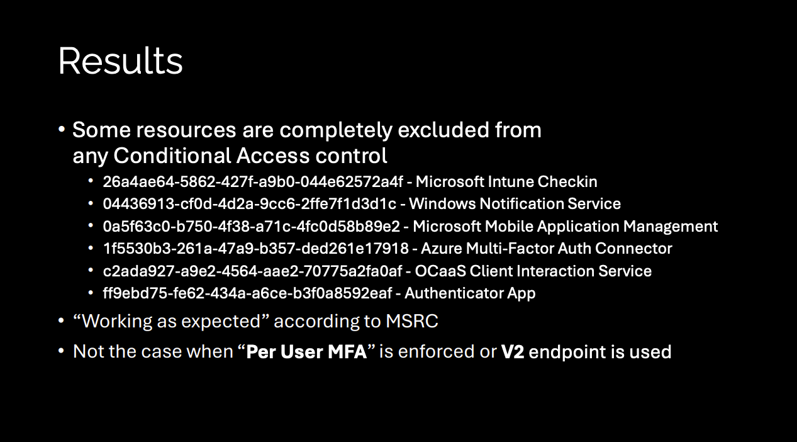
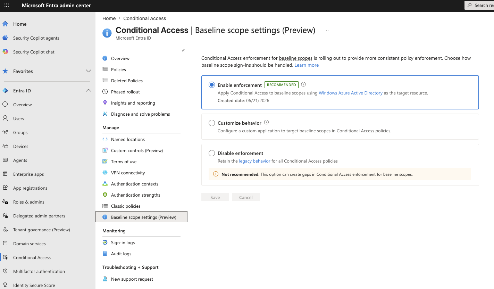

Most admins building an All resources Conditional Access policy assume all resources means exactly that. It did not. Add a single exclusion to the policy and a specific set of low-privilege scopes stopped being enforced entirely. Not for the app you excluded. For any app requesting those scopes, against any resource. The word "all" had an asterisk, and the asterisk has been there since resource exclusions were introduced.
That side door is the resource exclusion enforcement gap, and the fix has a name most admins have never heard: Baseline Scopes. It is one of the most underestimated changes to land in Conditional Access in years, because it patches a gap that has been quietly present for as long as resource exclusions have existed.
Start with the OAuth flow, because that is where the confusion lives. Every sign-in has two parts that matter here: the client (the app you are using, like Teams or Outlook) and the resource (the API that holds the data, like Microsoft Graph). Conditional Access policies are evaluated against the resource, not the client. Any client requesting a token for a covered resource triggers the policy.
Baseline scopes are a specific, named set of low-privilege permissions that Microsoft treats as the minimum an app needs just to complete sign-in and read basic profile information. The exact set differs by client type, which matters for how enforcement applies.
- offline_access
- openid
- profile
- User.Read
- People.Read (Graph only)
- offline_access
- openid
- profile
- User.Read
- User.Read.All
- User.ReadBasic.All
- People.Read
- People.Read.All (Graph only)
- GroupMember.Read.All (Graph only)
- Member.Read.Hidden (Graph only)
On their own, these scopes look harmless. They read the signed-in user's profile and some directory information. That is exactly why they were carved out, and exactly why the carve-out turned into a problem.
Here is the mechanic that most people never understood. The moment you add a single resource exclusion to an All resources policy, the legacy behavior kicked in: any app requesting only baseline scopes was no longer covered by that policy. Not just the excluded app. Any app. The exclusion you added for one specific resource silently opened a gap for the entire baseline scope set.
It gets worse. Even if you built a second policy that explicitly covered the excluded resource with the same control, the baseline scopes were still issued without challenge. There was a real gap between one broad All resources policy and the two-policy split that looks identical on paper. Fabian Bader covered exactly this in his research, and framed it with the Swiss cheese model that has become the standard way to reason about these gaps.
Each Conditional Access control is a slice of cheese. Each slice has holes. A single slice will let an attacker through one of its holes, but a second slice, positioned differently, catches them. The resource exclusion gap is a hole that lines up straight through the stack for anything requesting baseline scopes. The fix is not one perfect slice. It is additive policies: MFA and compliant device, not MFA or compliant device.
This did not come from one researcher, and it did not come from nowhere. It was a joint effort that pushed a known quirk into a fixed vulnerability, building on earlier work that Microsoft had waved off.
This work is a joint effort by Fabian Bader and Dirk-jan Mollema, presented together at TROOPERS25 and catalogued on their shared entrascopes.com project.
Fabian mapped the enforcement surface. He documented the resources that are always carved out of Conditional Access, found a password-verification path that avoids a strong-auth error in the logs, and identified a specific Microsoft Authenticator scope combination that slipped past the compliant device control. He also found that Microsoft's documented "Protect directory information" mitigation did not hold, because requesting only openid still returned a usable token.
Dirk-jan proved why the gap ran deeper than the documentation admitted. For several Microsoft first-party apps, the scopes printed in the token are ignored by the Graph backend. A token that reads User.Read could still enumerate users, groups, devices, service principals, and directory roles, and in some cases modify them. He was not the first to notice the scope behavior. The researcher known as Jmcgill (Syntax-Err0r) had already documented it publicly and reported it to MSRC, where it was waved off as by design, and it echoes Eric Woodruff's earlier UnOAuthorized research at Semperis on Microsoft apps holding undocumented Graph permissions. What Dirk-jan added was the root-cause analysis, and his write-ups are what finally moved MSRC to ship a fix.
That combination is what moved Microsoft. Earlier reports of the scope behavior had been triaged as "by design." Once it was clear the documented mitigation could still be bypassed and that first-party apps were reading and writing directory data the token should never have permitted, Microsoft acknowledged the issue and shipped a real fix.
The attack does not need a compromised app or a stolen secret. A public client ID is enough, and Microsoft's own first-party client IDs are published on entrascopes.com. With valid user credentials and any All resources policy that carries a resource exclusion, an attacker could skip the control you thought was enforced and read tenant directory data. Dirk-jan reports finding exactly this pattern in real-world tenants, not just in the lab.
Separate from the exclusion gap, Fabian's testing surfaced a related and equally uncomfortable fact. A handful of resources are hardcoded out of Conditional Access evaluation entirely. In the sign-in logs, the Conditional Access status for these always reports as notApplied, even when every resource in the tenant should be covered.

That final line is the part worth sitting with, and it corrects a common assumption. It is tempting to say the old per-user MFA model never had this problem because there were no exclusions to make. That is not quite the mechanic. Per-user MFA sat at a different enforcement layer, one these hardcoded carve-outs never applied to, so those same six resources are protected when per-user MFA is enforced. Fabian's own words on why the hardcoded Conditional Access exclusion needs to exist at all when per-user MFA covers it fine: it is "beyond my understanding." The irony is real. The legacy model most of us spent years migrating away from did not have this particular hole.
Because these resources do not enforce MFA, an attacker who already has a username and password can use them to validate the credential without generating a 50074 strong authentication error in the sign-in logs. It is a low-noise way to confirm credentials are live before doing anything louder. Worth knowing about when you are hunting.
You can confirm this in your own tenant. Query the six resource IDs directly against the Graph sign-in logs. One practical note: use the UnifiedSignInLogs table in Sentinel if you have it, since it covers both interactive and non-interactive sign-ins in one place. The beta Graph endpoint only returns interactive by default and will miss most of this traffic.
# Non-interactive is required, or these resources are invisible GET https://graph.microsoft.com/beta/auditLogs/signIns ?$filter=(resourceId eq '26a4ae64-5862-427f-a9b0-044e62572a4f' // Intune Checkin or resourceId eq '04436913-cf0d-4d2a-9cc6-2ffe7f1d3d1c' // WNS or resourceId eq '0a5f63c0-b750-4f38-a71c-4fc0d58b89e2' // MAM or resourceId eq '1f5530b3-261a-47a9-b357-ded261e17918' // MFA Connector or resourceId eq 'c2ada927-a9e2-4564-aae2-70775a2fa0af' // OCaaS or resourceId eq 'ff9ebd75-fe62-434a-a6ce-b3f0a8592eaf') // Authenticator and signInEventTypes/any(t: t eq 'nonInteractiveUser') &$select=createdDateTime,appDisplayName,resourceDisplayName, resourceId,conditionalAccessStatus
Run it and every row comes back notApplied. Flip the filter to look for any status other than notApplied on those same six resources and you get an empty set. In a tenant I checked, that held across the entire retention window, interactive and non-interactive alike. There is no sign-in to these resources that Conditional Access ever evaluated. That is the finding, sitting in plain sight once you know where to look.
This is also the one part of the story the logs will show you cleanly. Try the same approach for the baseline-scope gap on Microsoft Graph and it falls apart, which is worth understanding before you go looking.
A raw notApplied count against the sign-in logs is unlikely to surface the gap cleanly on its own. Here is why, and here is what Fabian published to actually find it.
The enforcement change works by routing baseline-scope sign-ins through Windows Azure Active Directory (00000002-0000-0000-c000-000000000000) as the target resource for CA evaluation. Microsoft Graph (00000003-0000-0000-c000-000000000000) is the other resource where these sign-in events surface in the logs. That is why Fabian's query filters to those two GUIDs, not because the gap was limited to them, but because that is where the evidence appears. Counting notApplied across all Graph sign-ins picks up high volumes of token requests from apps requesting broader scopes, pipeline service accounts, and portal flows. You need to filter to those two resource GUIDs, confirm Oauth Scope Info is present in authenticationProcessingDetails, expand the requested scopes, and compare them against the known baseline scope list. Any request where nothing beyond baseline was asked for is a genuine gap candidate.
Fabian always has us covered, and he provided a great KQL to help search and troubleshoot for impact. It uses UnifiedSignInLogs, which covers both interactive and non-interactive in one table, filters to the two resource GUIDs, and uses set_difference to isolate requests where only baseline scopes were present. array_length(Difference) == 0 is the precise definition of the gap.
let BaselineScopes = dynamic([ "email", "offline_access", "openid", "profile", "User.Read", "User.Read.All", "User.ReadBasic.All", "People.Read", "People.Read.All", "GroupMember.Read.All", "Member.Read.Hidden" ]); UnifiedSignInLogs | where TimeGenerated > ago(90d) | where ResultType == "0" | where ResourceIdentity in ( "00000003-0000-0000-c000-000000000000", // Microsoft Graph "00000002-0000-0000-c000-000000000000") // Windows Azure Active Directory | where ConditionalAccessStatus == "notApplied" | where AuthenticationProcessingDetails has "Oauth Scope Info" | mv-expand todynamic(AuthenticationProcessingDetails) | where AuthenticationProcessingDetails.key == "Oauth Scope Info" | extend RequestedOauthScopes = todynamic(tostring(AuthenticationProcessingDetails.value)) | extend Difference = set_difference(RequestedOauthScopes, BaselineScopes) | where array_length(Difference) == 0
Grab the query and take a look in your own environment. Another reason why identity and Azure make a great team. More importantly, get the steps enabled below to protect baseline scopes in your tenant.
Microsoft announced the enforcement change and began the phased rollout on June 15, 2026. Affected tenants are notified through the Microsoft 365 Message Center. If your tenant has not been switched yet, you do not have to wait. You can opt in today, and if you run All resources policies with resource exclusions, you should.
The setting lives behind a direct link. It is not surfaced in the normal Conditional Access navigation, which is a large part of why almost nobody knows it exists.

Enabling enforcement immediately applies your controls to flows that were previously exempt. That is the whole point, but it has real consequences. Device enrollment flows (Intune, Jamf, macOS platform login), AVD profile storage accounts, and any app you deliberately excluded so it would work from unmanaged devices can all be affected, because those flows lean on Microsoft Graph with baseline scopes and Graph is not the resource you excluded. Enable this in a test tenant or a controlled pilot before you flip it in production, and confirm your enrollment and break-glass paths still work.
The recommended path is to enable enforcement and use Fabian's KQL query to see what was previously slipping through. Run it before you enable to understand the scope, enable the setting, then run it again to confirm the gap is closed. If specific apps need to stay exempt for operational reasons, the Customize behavior option lets you designate a custom target application and exclude it from specific policies surgically, rather than leaving legacy behavior on for everyone.
Microsoft documents four scenarios where retaining legacy behavior may be valid: an All resources policy with a require compliant device grant where some apps must stay accessible from unmanaged devices; a policy with require app protection policy where the client isn't Intune SDK integrated; a block policy with a specific app exclusion; or a public client that must be exempt from device compliance for documented security reasons. For any of these, the Customize behavior option in the Baseline scopes settings page lets you assign a custom tenant-owned application as the target resource and exclude that one app from specific policies. This is the surgical path. It is not a blanket switch back to legacy behavior, and Microsoft is clear that it should only be used when one of those scenarios genuinely applies.
Baseline Scopes is not a flashy feature. There is no new blade, no dashboard, no glossy launch. It is a single radio button behind a hidden URL that closes a gap which sat open for years while most of us assumed an All resources policy meant all resources. It did not. The word "all" had an asterisk, and the asterisk was the entire baseline scope set every time you added an exclusion.
The lesson underneath it is the one that keeps recurring in identity work. The controls you configure are only as good as the enforcement behind them, and the enforcement is full of corner cases that Microsoft builds for its own operational reasons. Fabian and Dirk-jan did the field a real service by making those corners visible. The least we can do is turn the setting on.
Want More?
Follow along for more writing on M365 security, identity, and the real-world thinking behind modern cyber defense.
Read More on Medium